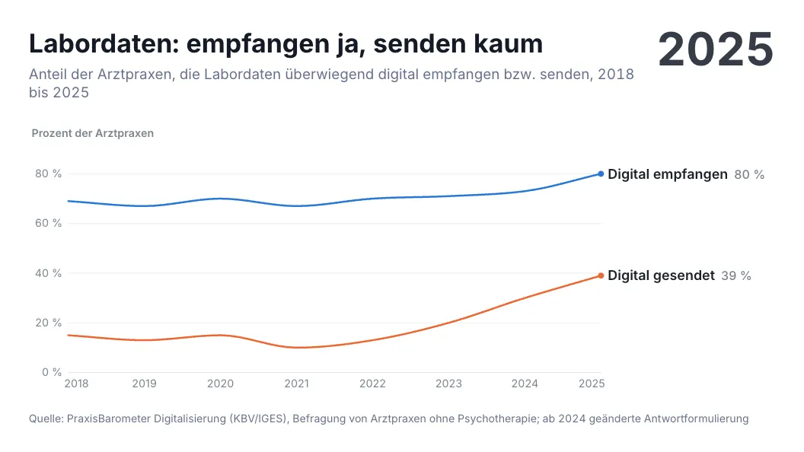
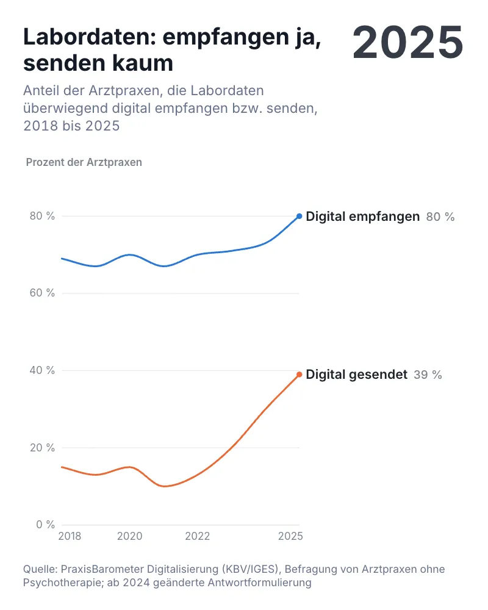

Labordaten in der Arztpraxis: LDT-Befunde ja, Aufträge kaum
Praxissysteme mit KBV-Zulassung für den Import von Laborbefunden nach LDT 3 tragen 95,8 Prozent der Installationen ärztlicher Systeme (Zulassungsverzeichnis der Kassenärztlichen Bundesvereinigung, Stand 21.10.2026). Den digitalen Laborauftrag als LDT-Export hat dagegen kein einziges ärztliches Praxissystem zertifiziert. Entsprechend empfangen laut PraxisBarometer 2025 80 Prozent der Arztpraxen Labordaten digital, senden aber nur 39 Prozent.


Das Wichtigste in Kürze
- LDT-Befund-Import: 22 von 28 ärztlichen Systemen sind zugelassen, zusammen 95,8 Prozent der Installationen. Der Wert ist an allen archivierten Ständen seit Januar 2022 gleich.
- LDT-Auftrag-Export: kein ärztliches Praxissystem; zertifiziert sind nur Epikur und Laborsysteme.
- PraxisBarometer: Labordaten digital empfangen 69 Prozent der Arztpraxen (2018) und 80 Prozent (2025); digital senden 15 und 39 Prozent.
- Seit 2025 bekommen Labore eine Pauschale, wenn sie ein System zur digitalen Auftragserteilung bereitstellen (GOP 40092). Im 1. Quartal 2025 wurde sie bei 80,5 Prozent der Fälle mit Transportpauschale abgerechnet.
Wo der digitale Auftrag tatsächlich entsteht
Für den Befund ist der Weg einfach: Das Labor schickt eine LDT-Datei, die Praxissoftware liest sie ein. Fast alle Systeme können das zertifiziert.
Beim Auftrag ist es umgekehrt. Weil kein ärztliches Praxissystem einen zertifizierten LDT-Auftrag erzeugt, entsteht ein digitaler Laborauftrag, wo es ihn gibt, im Auftragssystem des Labors: Die Praxis bestellt in der Software, die das Labor bereitstellt. Die neue Pauschale GOP 40092 bezahlt genau diese Bereitstellung durch das Labor. Sie zeigt, wie verbreitet solche Systeme sind, aber nicht, wie viele Aufträge tatsächlich digital kommen.
Für alle, die Schnittstellen bauen, ist das der eigentliche Befund: Zwischen Praxissoftware und Labor gibt es einen genormten Weg zurück (Befund) und keinen genormten Weg hin (Auftrag) – den füllen die Labore mit eigenen Portalen.
Was die Zahl nicht sagt
- Zulassung ist nicht Nutzung. Wie viele Praxen tatsächlich LDT 3 statt des älteren LDT 2 einsetzen, ist nirgends belegt.
- Das PraxisBarometer ist eine Befragung. Ab 2024 lautet die Antwort „Labordaten (inklusive Labordatenaufträgen und -ergebnissen)“; der Anstieg beim Senden von 20 Prozent (2023) auf 30 und 39 Prozent ist teilweise ein Effekt der neuen Formulierung.
- Die Pauschale misst Bereitstellung. GOP 40092 wird je Behandlungsfall abgerechnet, wenn das Labor ein System bereitstellt; ob der einzelne Auftrag digital kam, steht nicht in der Abrechnung. Den Wert gibt es bisher nur für ein Quartal.
Gerechnet
Der Anteil der Installationen ist gerechnet: Installationen Ende 2025 (KBV-Installationsstatistik) der Systeme mit Zulassung laut LDK-Verzeichnis, geteilt durch alle Installationen der 28 erfassten ärztlichen Systeme. Das Verhältnis 80,5 Prozent ist gerechnet aus den Abrechnungshäufigkeiten der GOP 40092 (15,1 Mio.) und der Transportpauschale GOP 40094 (18,8 Mio.) im 1. Quartal 2025. Die Werte des PraxisBarometers sind veröffentlichte Prozente, nichts davon ist gerechnet.
Quelle und Methode
Kassenärztliche Bundesvereinigung, Zulassungsverzeichnisse (LDK, Stand 21.10.2026, ältere Stände über das Webarchiv) und Installationsstatistiken; KBV/IGES, PraxisBarometer Digitalisierung 2018–2025; KBV, Abrechnungshäufigkeiten je Gebührenordnungsposition, 1/2025. Abgerufen am 22. Oktober 2026. Alle Systeme mit ihren Zulassungen stehen in Praxisverwaltungssysteme in Deutschland; wer die Labore betreibt, zeigt Laborärzte: 88,5 Prozent angestellt, wie es beim Arztbrief aussieht, eArztbrief über KIM.
Häufige Fragen
Welche Praxissoftware kann LDT 3?
Für den Import von Laborbefunden nach LDT 3 sind laut KBV 22 der 28 erfassten ärztlichen Systeme zugelassen, darunter CGM MEDISTAR, CGM TURBOMED, medatixx, x.isynet, Medical Office, tomedo und T2med. Nicht zugelassen sind unter anderem Praxis-Programm, Med7 und FIDUS.
Kann die Praxissoftware Laboraufträge digital senden?
Einen zertifizierten LDT-Auftrag-Export hat kein ärztliches Praxissystem. Digitale Aufträge laufen über Auftragssysteme, die die Labore bereitstellen; seit 2025 werden die Labore dafür mit einer eigenen Pauschale (GOP 40092) vergütet.
Wie viele Arztpraxen empfangen Labordaten digital?
Laut PraxisBarometer Digitalisierung 2025 80 Prozent der Arztpraxen; 39 Prozent senden Labordaten digital.